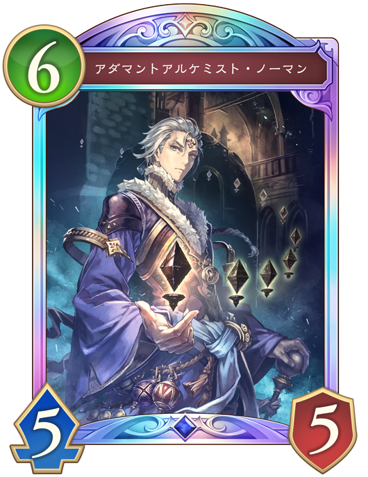
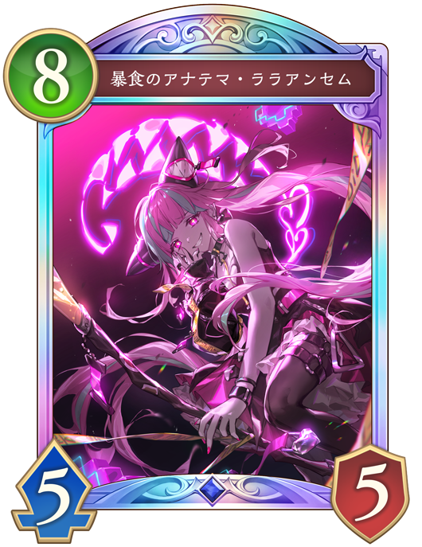
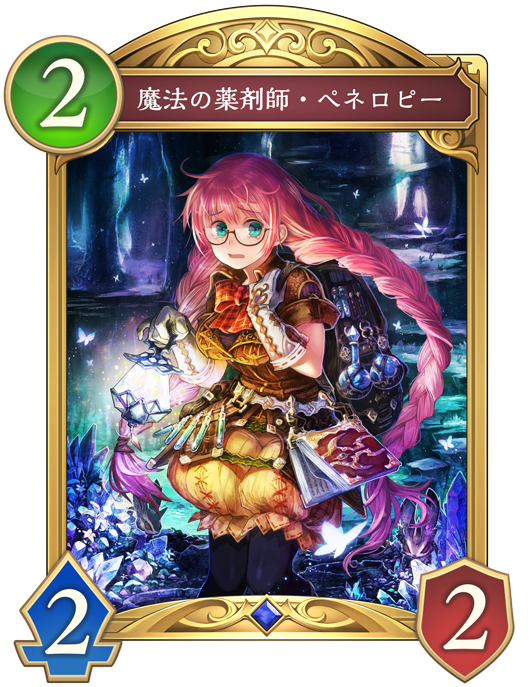

Q. 次のターンに予測できる相手の行動で危険なものは？

アダマントアルケミスト・ノーマン
ファンファーレと進化時に土の秘術1でモードを1つ選んで能力が働く。 その中でも「ガーディアンゴーレム」を出してそれはバリアを持つ、という効果が強力で強い盤面ができ処理が容易ではない。

暴食のアナテマ・ララアンセム
「暴食のアナテマ・ララアンセム」はオーラを持っており、能力で選択できない。 さらに、ラストワードの土の秘術2で「暴食のアナテマ・ララアンセム」を場に出す効果を持っており、土の印が2以上ある限り場に出続ける。 処理が大変なうえ、超進化時に相手のフォロワーを2体破壊する強力な効果も持っている。
 天才美少女錬金術師・カリオストロ
天才美少女錬金術師・カリオストロ
ファンファーレで土の印を+2し「アルス・マグナ」を手札に加える。 奥義がたまっている可能性があり、溜まっていると進化する。 解放奥義までは溜まっていないため、そこまで危険ではない。

魔法の薬剤師・ペネロピー
ファンファーレで土の印を+2し、超進化することで、2枚ドロー、リーダー2回復、土の印+2する効果を持っている。 超進化しなければいけないが、このカード1枚で手札補充と回復と土の印を増やせる。 リソースが回復するが盤面は強くない。
予想の説明(クリックすると表示されるよ)
この状況では相手は先攻8ターン目で、8コストである「暴食のアナテマ・ララアンセム」がプレイされる可能性が高い。
土の印が多くある場合に、「暴食のアナテマ・ララアンセム」がプレイされると処理が間に合わず盤面に残り続けてしまい、大ダメージを受けてしまう。
また、超進化時に相手のフォロワーを2体破壊する効果を持っており盤面を破壊しながらリーダーへダメージを与えてくる。
超進化込みで3体までしか処理できないため、4体以上盤面を展開してプレイしにくい状態を作ることが有効である。